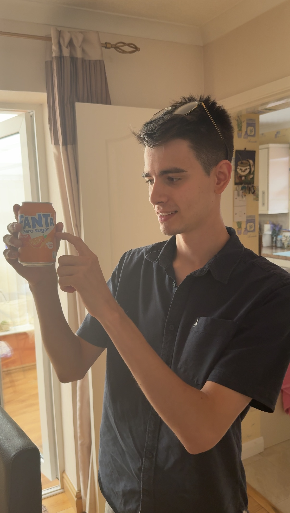

The pursuit for 'perfect sugars' is a common goal amongst those managing diabetes. However, this quest can often lead to frustration and disappointment. The reality is that 'perfect sugars' don't exist and the closest alternative is a far cry from perfection; on top of this, education from many healthcare teams upon diagnosis is not always helpful and can even be harmful. In this blog, we'll break down and explain the importance of knowing some key facts about diabetes management.
Understanding Blood Sugar Variability
When we are diagnosed, if your experience was anything like mine, you were likely told that you can continue on with your life as normal, but you just need to keep your blood sugars controlled. You can continue eating the same foods, doing the same activities but you should just be more careful and ensure you're injecting insulin, eating carby foods before exercise so that you can avoid predominately the hypos.
This is a common narrative but it does not tell the whole story. So I will try to.
One of the hardest things to accept when you are diagnosed is that your life is going to change, and some things that you used to do without a second thought, you must now evaluate closely the impact it will have on you and your health. To ease the acceptance of diabetes, many healthcare teams, mine included, choose to omit this from their guidance, which is understandable. After all, it's difficult enough being diagnosed with a chronic illness, why would adding further terms of living with diabetes be on the table at this time?
However, the issue is that many diabetics leave hospital and are never educated further on the impact of their lifestyle choices, both type ones and type twos. Truthfully, management only begins with insulin injections, or taking medication, the rest is up to the person with diabetes. If that person is educated on complex biology, they may stand a fighting chance at achieving as perfect sugars as is possible with diabetes; if not - they are in for a tough ride - or rollercoaster.
One of the easiest revelations I can provide many of you readers is that carb counting is not the full picture of food vs insulin regime. For example, protein is made up of amino acids, either glucogenic or ketogenic in nature (most are glucogenic). Your body cannot store amino acids, yet in each amino acid there is energy. Like all animals in the world, the body has been subjected to billions of years of evolution, meaning the body will not simply lose energy - it has adapted ways to store it.
Back to the amino acids. When you eat protein, your digestive system breaks it down into these amino acids, which then enter your bloodstream. The body can use amino acids to repair muscles, tissues and severally for creation of new molecules and hormones. However, your body does not need too many amino acids each day. When it has an influx of amino acids, such as a single large chicken breast (about 50g of protein), the body ends up working with an excess of amino acids, and as it cannot store these amino acids, it must convert them to a molecule the body can store - fat or glucose.
For glucogenic amino acids, this is a process called gluconeogenesis, where glucose (sugar) is created from the amino acid, and released into the bloodstream where, if insulin is present in enough of an amount, it will be stored as glycogen or converted to fat. For most diabetics, insulin isn't present as they have only 'carb counted' or even guessed how much insulin they should take. The result is a spike after about 4 hours.
This is why many diabetics experience a spike in blood sugars after eating protein, and why it is important to understand that carb counting is not the full picture of food vs insulin regime. I hope this small insight will help many diabetics to understand why their sugars aren't working for carb counting - it just simply isn't a good enough measure of how the food molecules you're eating will impact your sugars.
There are many more examples of this type of influence, and briefly covering protein doesn't do it justice, but I hope this has given you a small insight into the complexity of diabetes management and why 'perfect sugars' is a losing battle from the very start, when you are not educated by healthcare teams and are working with 'one hand behind your back'.
Why Aren't We Educated?
In the UK, there are approximately 700 people diagnosed with diabetes every day according to One Medical Group. This is staggering. Now imagine the effort and planning that would be required of our healthcare system to adequately inform 700 people each day of the 5 hormones which increase sugars, the 3 hormones which decrease sugars, the 3 types of food molecules and how they impact blood sugars, and the 5 different types of insulin and how they work. Yeah, imagine. That's the only thing we can do as it would be impossible to implement.
The reality is that the healthcare system is not set up to provide this level of education to every diabetic. Instead, they focus on the basics of diabetes management, such as insulin administration and carbohydrate counting. While these are important, they do not provide the full picture of how to manage blood sugars effectively.
This is where JABS comes in. We provide personalised education and support to help diabetics understand the complexities of their condition and how to manage it effectively. Our goal is to empower individuals with the knowledge and skills they need to take control of their diabetes and achieve better health outcomes.
How Can You Improve Your Understanding?
As a 15 year old who was diagnosed with diabetes, I left hospital and researched every night something about my condition. I learned about the complexities of how it came to be that I ended up with type one diabetes, how it could be cured, why sugars sometimes did things that I wasn't told about by my doctors, such as going up every morning. I came to learn that science held the key to my misunderstanding I held about my disease. This is not possible for everyone. What is possible is to question everything. Einstein stated this, question everything.
Whilst I cannot say your healthcare team may be providing an incomplete or even incorrect picture of diabetes management, I can say that it is important to question everything you are told. If you are not sure about something, ask your healthcare team. If they cannot answer your question, seek out additional resources or support.
I was told that I could eat whatever I wanted, as long as I took insulin. This is not true. I learned that different foods have different effects on blood sugars, and that it is important to understand these effects in order to manage diabetes effectively.
Don't be fooled by a title, be empowered by your own knowledge. I can help unlock this for you, and explain many of the intricacies of diabetes' effects on your body. I now question my doctors at my clinic appointments, not the other way around. You could too.
"The important thing is not to stop questioning. Curiosity has its own reason for existing." - Albert Einstein